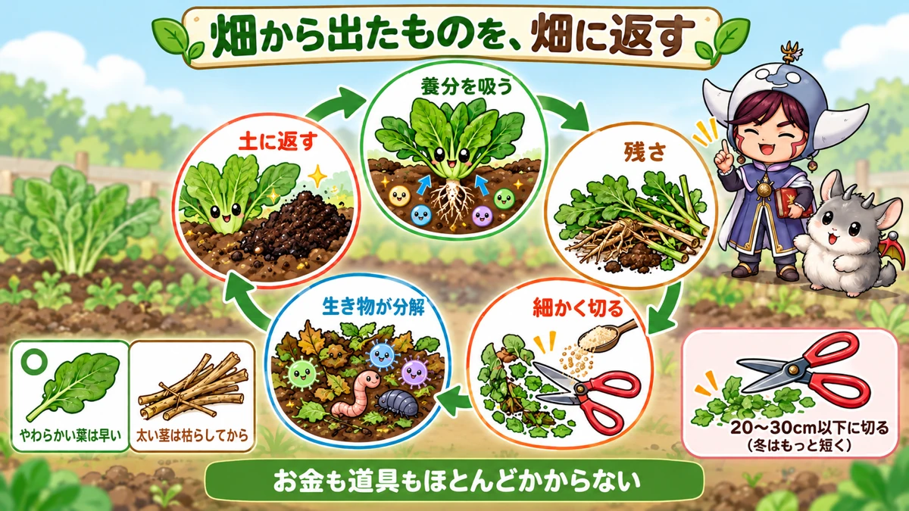
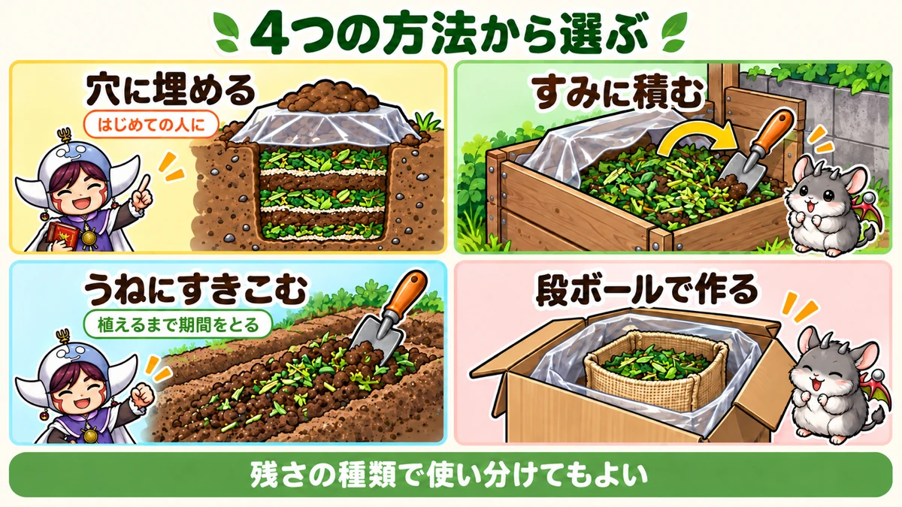
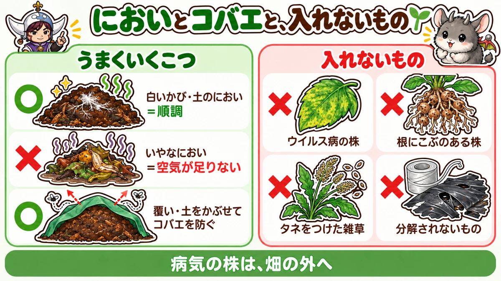

Spent crops 🍂 What came from the plot goes back to it
🍂 "There's too much to put out with the rubbish."
🍂 "I piled it in the corner and now it smells and the flies have come."
🍂 "Two years on, the thick stems still haven't rotted."
Hello, I'm Eiko. Eight years of growing vegetables organically and without pesticides, and a teaching licence in science.
As the autumn and winter crops come in and the summer plants are cleared, the plot fills up with pulled stems, leaves and roots. What to do with it all is a surprisingly common headache. There's too much for the bin, and a heap in the corner brings smells and insects.
Handled well, though, this crop debris is a free and dependable material for improving your soil. What came from the plot goes back to the plot — and you buy less fertiliser and throw away less. This article covers why it's worth returning, the knack of chopping small, four common methods, using rice bran, dealing with smells and fruit flies, handling diseased plants, and how to use it through the seasons.
Where you are: this is ordinary garden composting, with a Japanese twist or two — rice bran as the activator, and burying debris in a pit. Rice bran may be hard to find; any nitrogen-rich activator does the same job: a little poultry manure, a sprinkle of finished compost, grass clippings, or a handful of garden soil to bring in microbes. Months below are for central Japan; in colder areas everything simply runs slower in winter.
The essentials: chop to 8–12 in (20–30 cm) or less (shorter in winter); set tough stems and roots aside to dry before breaking them up; keep diseased plants, seeding weeds and anything that won't rot (plastic string, mulch film) out; cover the heap to keep rain off; turn it now and then.

What this diagram says （図解の文字）
- What came from the plot goes back to the plot
- "Takes up nutrients" → "Crop debris" → "Chop small" → "Creatures break it down" → "Back into the soil"
- "Soft leaves: quick" ／ "Thick stems: dry them first"
- "Chop to 20–30 cm or less (shorter in winter)"
- "Costs almost nothing in money or tools"
① The quick version
Four methods
- Bury in a pit: dig a hole in a corner and layer debris with rice bran. Few smells or insects
- Heap in a corner: pile it in an enclosure and let it become compost over time. Handles a lot
- Dig into the bed: mix chopped debris straight into an empty bed. Little work
- Cardboard box: compost small amounts in a garden or on a balcony, with little smell
Tips
- Chop small (8–12 in / 20–30 cm or less; shorter in winter)
- Set thick, tough stems and roots aside; break them up once dry
- Soft leaves and stems break down fast
- Sprinkle a little rice bran
- Cover the top to keep rain out
- Turn it now and then to let air in
- Keep it damp: add water if dry, dry material if soggy
How long
- To finished compost: roughly 6 months to a year (depends on season and method)
- Digging in: dug in during winter, it's well broken down by spring planting
② Why give it back to the soil
Nutrients return to the plot
As they grow, vegetables take up a lot of nutrients from the soil, and some of that remains in the stems, leaves and roots after harvest. Bin the debris and those nutrients leave the plot. Compost it and return it, and the next crop can use them again. Nutrients cycle within the plot, so you can use less bought fertiliser.
The soil gets crumbly
Compost from crop debris contains humus, which makes soil soft and crumbly. As humus builds up, soil particles clump into small crumbs, improving both drainage and water-holding, and letting air through.
It costs nothing
The raw material comes from your own plot. Nothing to buy, and secateurs and a spade are all the tools you need.
Less rubbish
Bagging up large amounts of debris is a chore. Returning it to the soil on the plot saves both the work and the waste.
③ Chopping small is the main knack
The shorter, the faster
Left whole, debris takes a very long time to break down. Cut long stems and big leaves to about 8–12 in (20–30 cm). The shorter you cut, the faster it goes. In winter, when cold slows everything, cut even shorter than in summer so it's usable by spring.
Separate soft from tough
- Soft: outer leaves of leafy greens, broccoli and cabbage leaves, aubergine and tomato leaves, bean stems and leaves. Break down quickly
- Tough: thick stems of aubergines, peppers and okra, sweetcorn stalks, thick roots. Break down slowly
Put soft leaves and stems in freely. They break down fast, and if you want compost for spring, building around them is the sure way.
Thick, tough stems and roots added as they are can still be recognisable years later. Set them aside — in a corner of the plot, say — until completely dead and dry, then break them up small; they'll go much faster. If you've nowhere to keep them, binning just these is an option.
Light, leafy stems can go in as they are
Thin, leafy, airy parts of aubergines, cucumbers and tomatoes break down naturally even unchopped.
④ Crop by crop
Quick to break down
- Outer leaves and leaves of Chinese cabbage, cabbage and broccoli
- Radish and turnip tops
- Lettuce, komatsuna, spinach and other leafy greens
- Edamame and green bean leaves
- Shiso and basil leaves
These are soft and wet, and chopped small they break down quickly. Because they're so wet, though, a big load at once can turn putrid; mix in dry material as you go.
Slow to break down
- Thick stems and roots of aubergines, peppers and okra
- Sweetcorn stalks and cobs
- Thick stems of broccoli and Brussels sprouts
- Sweet potato vines (there's a lot of them)
- Thick stems and roots of basil and shiso
Big stems can take years. Cut to about 6 in (15 cm) and they'll mostly break down in a year. Dry stems too tough to cut and then break them, or bury them at the bottom of a deep pit.
Keep these out
- Diseased plants (virus diseases, clubroot or nematode galls, downy mildew and so on)
- Weeds that have set seed
- Plastic string, scraps of mulch film, ties from stakes — anything that won't rot
- Plants that were heavily sprayed (if you used sprays)
Tools
- Secateurs or garden scissors (for cutting stems)
- A spade (for digging and turning)
- Rice bran (or another activator)
- A sheet or plastic for covering
- A riddle or sieve (for using the finished compost)
⑤ Turning the heap
Now and then, turn the heap over to let air in.
- With a spade, work from one end, moving material across to rebuild beside it
- Swap it round so newer material from the top ends up underneath and older material from the bottom on top
- Water dry patches; mix dry material into soggy ones
- Put the cover back on
Roughly once a month in summer and every two months in winter. Each turn warms the heap and speeds things up; you may even see steam rising.
⑥ Choosing a method
By plot size and lifestyle
- Large plot, lots of debris: a corner heap; lots of compost over time
- Worried about smell or looks, close to houses: bury it in a pit, out of sight
- Time before the next planting, and little effort wanted: dig it into the bed
- Allotment with nowhere to tip it, a garden or balcony: a cardboard box or lidded bin
- Hard, poorly drained soil: bury it deep while double digging
You don't have to pick just one. Dig soft leaves into the beds and heap the thick stems, for example — matching method to material.
Starting out
For a first try, burying in a pit is the most forgiving method, with few smells or insects. Dig one pit in winter and bury your autumn and winter crop leaves, and by the following winter you'll feel how soft and crumbly the soil there has become.
⑦ Method 1: bury it in a pit
Steps
- Dig a pit somewhere out of the way, such as a corner of the plot. For about 110 sq ft (10 m²) of plot, about 2 ft (60 cm) square and 20 in (50 cm) deep is a guide. Near-vertical walls hold more.
- Cut the debris to about 8 in (20 cm).
- Fill the pit with debris to about 12 in (30 cm) from the bottom.
- Sprinkle two or three handfuls of rice bran. Some people add a little poultry manure or oilseed cake.
- Scatter a couple of handfuls of soil on top (to bring in soil microbes).
- Tread it down firmly.
- Repeat the layers of debris, rice bran and soil until the pit is full.
- Finish with the dug soil, mounded slightly.
- Cover with clear plastic, weighing the edges with soil, to keep it warm.
The good part
Buried in soil, it gives off little smell, attracts few insects and is out of sight. Buried in winter, it's well broken down by spring or summer.
Using it
After six months to a year, once the original shapes are gone and it looks like soil, dig it out and use it. Or simply grow your next crop on that spot.
⑧ Method 2: heap it in a corner
Steps
- Choose a corner for the heap. An enclosure of boards or mesh keeps it tidy and easy to manage.
- Spread chopped debris 8–12 in (20–30 cm) deep.
- Sprinkle rice bran until the surface is lightly dusted white.
- If it's dry, water it until a squeezed handful just holds together.
- Build up layers of debris, rice bran and water.
- Cover the top with a sheet.
- Turn the whole heap every month or two.
How long
Depending on season and materials, in 5–6 months to a year it becomes dark, soil-like compost with no recognisable bits. Before use, sieve it and return anything not yet broken down to the heap.
Plenty of helpers
Inside the heap, not just microbes but worms, woodlice, chafer grubs and many other creatures eat the debris and speed its breakdown. Chafer grubs eat roots in the beds, but in the heap they're hard workers. If they turn up when you sieve, put them back in the heap rather than on the beds.

What this diagram says （図解の文字）
- Choose from four methods
- "Bury in a pit — good for beginners" ／ "Heap in a corner"
- "Dig into the bed — leave time before planting" ／ "Make it in a cardboard box"
- "You can mix methods to suit the debris"
A bin made of soil-filled sacks
Here's a way to make a debris bin in a small space using empty fertiliser sacks:
- Fill empty fertiliser sacks about 80% with soil and tape the tops shut firmly.
- Stand the sacks side by side in a square or circle with no gaps, to form a wall.
- Tie strong string round the outside so they don't topple.
- Put chopped debris inside and tread it down.
- After about 12 in (30 cm), sprinkle two or three handfuls of rice bran, then repeat debris and bran.
The soil sacks last for years. Some people open the tops of the wall sacks and grow potatoes or radishes in them, making the most of the space.
Keep the rain out
Cover the heap with a sheet to keep rainwater out and it's far less likely to smell putrid or breed insects. In one example, debris kept dry under cover for about a year and a half had broken down almost to ordinary soil, with hardly any smell or insects.
⑨ Method 3: dig it into the bed
Low effort
Mix chopped debris straight into an empty bed. No heap needed, so it's easy.
- Chop the debris as small as you can.
- With summer debris, leave it on the bed for 1–2 weeks to wilt first; it's easier to cut.
- Spread it over the empty bed and sprinkle a little rice bran.
- Mix it well into the soil with a spade or hoe.
- In winter, cover with mulch film so the soil doesn't get too cold and breakdown continues.
Leave time before planting
Plant into debris that's still breaking down and the heat, gases and competition for nitrogen can hold your vegetables back.
- Dug in from late autumn into winter, it's well broken down by summer-crop planting in spring
- If autumn crops follow summer ones, clear and dig in by about mid-August to be ready in time
Dig a few times in spring
Before spring planting, dig a bed that had debris dug in over winter two or three times, breaking up clods. The air revives soil microbes and the rest of the debris breaks down fast. A bed where it's gone well shows almost no trace of debris and the soil is soft and crumbly.
Burying it deep while double digging
Where soil is hard, drains poorly or roots struggle, you can bury debris deep while turning the soil over.
- Where next year's bed will go, dig a trench 20–24 in (50–60 cm) deep, keeping topsoil and subsoil in separate piles.
- Put debris in the bottom. Being deep, it can include slow stems and roots.
- Sprinkle a little bokashi or rice bran over it to speed things up.
- Return the deeper soil first and the topsoil last (some people swap them, putting the old topsoil underneath).
Done by the end of the year, it's said to break down in 2–3 months and help spring crops root well. It's hard work, so keep it for the worst patches.
Under the paths, for drainage
Autumn and winter crops can suffer root damage in long autumn rains. One method is to bury summer debris under the paths between beds to improve drainage and air.
- Spread the summer stems and branches out to dry in the sun for about a week until crisp.
- Dig out the path, lay the dry debris in and put the soil back.
Drying first stops it turning putrid.
⑩ Method 4: a cardboard box
Little by little, in a garden or on a balcony
If your allotment has nowhere to tip debris, or you want to compost at home without smells or insects, a cardboard box works.
An example
- Assemble a sturdy cardboard box and double-tape the bottom so it won't give way.
- Put chopped debris into a woven sandbag sack.
- Alternate debris with sprinkles of rice bran.
- Add 2–3 handfuls of leaf mould (a source of microbes).
- Add about 2 handfuls of rice-husk charcoal (for air and to absorb smells).
- Tie the sack, put it inside a larger plastic bag and stand it in the box.
- Close the lid.
If liquid seeps out of the sack, change the outer plastic bag. That stops water pooling and the contents turning putrid. Winter leaf debris is already moist, so it needs no extra water.
Or make liquid feed
Another approach uses a lidded kitchen-waste bin with a tap: fill it with chopped summer debris and shiso leaves, mix in bokashi or similar to ferment, and dilute the liquid that collects to use as a liquid feed. The lid keeps smells in. Follow the bin's instructions on what can go in.
⑪ Clearing up, step by step (harvest day)
- Remove stakes, string and netting so no string or clips end up in the debris
- Pull the plants, roots and all, and knock the soil off on the spot (the soil stays in the plot)
- Separate diseased plants from healthy ones; bag the diseased ones and take them off the plot
- Divide the healthy plants into soft leaves and tough stems and roots
- Cut the soft leaves and thin stems to 8–12 in (20–30 cm) or less and take them to the compost
- Set tough stems and roots aside to dry; break them up when dead
- Clear leftover roots and weeds from the empty bed and get it ready for the next crop
⑫ Using rice bran
Food for microbes
Rice bran feeds microbes and speeds up breakdown. Sprinkle it between layers when you build a heap or fill a pit.
Don't overdo it
Add too much in the hope of faster results and you get insects, or a lack of air and a putrid smell. A light dusting of white is plenty.
⑬ Smells and fruit flies
A bad smell means it's rotting
When debris is breaking down well, it smells of soil or slightly sweet. A bad smell means it's short of air and going putrid.
- Turn it to let air in
- Mix in dry soil, fallen leaves or dead debris to reduce wetness
- Don't add a big load of wet, fresh debris at once
Keeping fruit flies down
Debris, especially wet, fresh debris, draws small flies.
- Cover the top with weed membrane or plastic after adding debris
- Throw soil over each new addition
- Scatter a little wood ash (the smell deters them; it's strongly alkaline, so go lightly)
- Spray wood vinegar diluted about 500 times over the top (it's strongly acidic, so don't make it stronger)
- Turn it, mixing new debris on top with older debris below

What this diagram says （図解の文字）
- Smells, fruit flies, and what to keep out
- "Getting it right": "White mould and an earthy smell = going well" ／ "A bad smell = short of air" ／ "Cover it and throw soil over to keep flies off"
- "Keep out": "Virus-diseased plants" ／ "Plants with galled roots" ／ "Weeds that have set seed" ／ "Things that don't rot"
- "Diseased plants go off the plot"
⑭ When it isn't working
It won't break down
- Pieces too big: chop them again
- Too dry: water until moist
- Cold weather: slow progress is natural; it speeds up when it warms
- Short of air: turn it
- Too few microbes: mix in rice bran, finished compost or a little garden soil
It's sludgy and smells
Too wet, and going putrid. Mix in dry leaves, dead debris or dry soil, turn it to let air in, and cover it against rain.
White mould has appeared
Fluffy white threads with an earthy smell mean it's breaking down nicely. Nothing to worry about.
⑮ Using the finished compost
How to tell it's ready
- The original leaves and stems are almost unrecognisable
- It's dark, and crumbly or moist
- It smells of soil, not of anything unpleasant
- Squeezed in your hand, it crumbles apart
Sieve it first
Finished compost may still hold unrotted thick stems, stones or grubs. Sieve it, use the fine material and return the rest to the heap.
Where to use it
- Mixed into the soil when preparing beds before spring and autumn planting
- In beds for hungry crops such as taro; one grower found taro grown on debris compost sized up as well as with chemical fertiliser
- Mixed into old container compost to refresh it
⑯ Diseased plants
Where opinions differ
Whether to compost diseased plants divides opinion.
- It's fine: as a heap breaks down, it can reach about 140°F (60°C), which kills most disease organisms
- Keep them out: a small garden heap doesn't necessarily get hot enough throughout, and disease can survive
In a home garden it's hard to get the whole heap uniformly hot, so it's safer to take diseased plants off the plot. In particular, keep out:
- Plants with virus diseases (mosaic and others)
- Plants with galled roots (nematodes)
- Leaves badly affected by downy or powdery mildew
- Weeds that have set seed (seeds survive and sprout wherever you spread the compost)
Debris covered in insects
Debris crawling with aphids or caterpillars, heaped as it is, can send them straight back to your crops. Bag it for a while until the insects die, then add it, or bury it in a pit and cover with soil.
⑰ Through the seasons (central Japan)
Clearing spring greens, peas and broad beans (May–June)
- Outer leaves of spring greens and pea and broad bean haulm break down fast — chop and heap
- Pea and bean stems tangle, so untie them from canes and netting before cutting
- Bag aphid-covered broad bean tips until the aphids die before adding them
Clearing summer crops (August–September)
- Leave tomato and aubergine stems and leaves on the bed for 1–2 weeks to dry, then chop
- If digging into beds for autumn crops, do it by about mid-August
- Set thick stems aside and break them up when dead
- It's warm, so breakdown is fast — but watch for flies and smells
Clearing autumn and winter crops (November–February)
- Outer leaves of Chinese cabbage, cabbage, broccoli and radish tops all go in
- It's cold and breakdown is slow, so cut shorter than in summer
- Winter is quiet on the plot — a good time to get stuck into composting
- Dug into beds in late November to December, it's ready for spring planting
- You can also lay radish leaves and the like on the paths (they don't rot quickly in winter)
Spring (March–April)
- Dig beds that had debris dug in over winter two or three times and check progress
- Turn the heap built over winter
- Sieve finished compost and use it to prepare beds for summer crops
⑱ Keeping notes, and being a good neighbour
- When, which crop's debris, and how much you added
- What else you added (rice bran and so on)
- When you turned it
- When it was ready and where you used it
- How the crops grew afterwards
Notes tell you how long it takes, and which materials break down best, in your own conditions.
- Near neighbours' houses, bury debris or cover it well so smells and insects don't bother them
- If cats or crows dig it up, put a board or mesh over it
- Don't make a bed of new seedlings right beside the heap (insects can move across)
- On allotments, follow the site's rules on debris
⑲ Where growers disagree, and common mistakes
Dig it in, or compost it first? Digging chopped debris straight in is easy but means waiting before you plant. Composting it in a heap first takes effort and space, but the result can be used right before planting. Choose by plot size and how soon you'll plant.
Add soil or fertiliser? Some say adding a little soil, poultry manure or oilseed cake besides rice bran speeds things up; others say rice bran alone is enough. Too much causes smells and insects, so keep additions small.
Common mistakes:
- Heaping it whole — still recognisable years later. Chop to 8–12 in (20–30 cm) or less
- Adding thick stems and roots as they are — very slow. Set them aside, dry them, then break them up
- A mountain of fresh debris that smelled and drew flies — cover it, throw soil over, and turn to let air in
- Planting straight after digging it in — heat and gases from breakdown can damage roots. Leave time
- Composting diseased plants too — disease can survive in a small heap. Take them off the plot
⑳ Questions people ask
What about sweetcorn stalks? They're tough and take ages whole. After harvest, cut them short, dry them, then break them up for the heap. The leaves break down fast — chop them and add them.
I have a mountain of sweet potato vines. There's a lot, and the thick parts are slow. Chop leaves and thin vines for the heap; dry the thick vines and break them up, or bury them at the bottom of a deep pit. If there's too much, add it in batches rather than all at once.
Can vegetables grow on debris compost alone? It softens the soil and holds some nutrients, but may not be enough for every crop. Give hungry crops base and top-up feeds. Build the soil with debris compost and feed to suit each crop.
Does it break down in winter? More slowly, but it doesn't stop. Chop it small, sprinkle rice bran and cover with plastic to keep it warm, and it keeps going little by little. When spring warms up, it speeds right up.
How long until it's usable? It varies with method, season and materials, but 5–6 months to a year for a heap is typical. When the original shapes are gone, it's dark and smells of soil, it's ready.
There's nowhere on my plot for a heap. You can lay debris on the paths. In winter, radish and cabbage outer leaves laid on the paths stay fairly dry and break down slowly back into the soil. In summer they rot fast, so chop them and cover with soil.
Can kitchen scraps go in? Vegetable scraps can, but they're wet and attract smells and insects, so add them sparingly — cover them with soil or use the box method. Leave out anything oily, meat or fish, which bring smells and animals.
How much finished compost should I use? Use it like bought compost, when preparing beds. Its main job is softening the soil rather than feeding, so feed each crop separately.
Can fallen leaves go in too? Yes. Dry leaves balance the wetness of leafy debris and help stop it rotting. Wet dry leaves before adding them.
What about the string tied round stakes? Plastic string, clips and mulch-film scraps never rot. Remove them first. Natural string such as jute can be chopped and added.
The heap is full of worms. Worms eat debris and return it as castings — great helpers. Lots of them means it's going well. They can go onto the beds with the finished compost.
How much debris can I deal with? As a guide, a pit about 2 ft (60 cm) square and 20 in (50 cm) deep handles the debris from about 110 sq ft (10 m²). For a heap, add as much as the enclosure holds. With a lot, two heaps used in turn is handy.
My allotment has nowhere to tip debris. Follow the site's rules: take it home, or try the cardboard-box method. Check whether you're allowed to dig it into your plot.
Science bit: six whys 🔬
Who does the breaking down? Invisible microbes such as bacteria and fungi, plus small creatures — worms, woodlice, insect larvae. The bigger creatures chew debris into smaller pieces, and microbes break down their droppings and the fragments. Chopping speeds things up because it gives all these creatures more surface to work on.
Why does a heap get hot? When microbes break debris down they use energy, and some of it becomes heat. In a big pile that heat is trapped, and the temperature inside rises — hence the steam. Warmth speeds breakdown further, but if air runs short it turns putrid. Turning keeps the good kind of breakdown going.
Why does drying first stop it rotting? Summer stems and leaves hold a lot of water. Piled up wet, they stick together, leaving no gaps for air. Without air, putrid breakdown takes over. Dried in the sun first, they leave gaps for air and break down well.
Why mix in a little soil? Garden soil is full of microbes that break down debris. A handful of soil per layer brings them into the heap and gets things started. Adding a little finished compost works the same way.
Why does rice bran speed it up? Rice bran is rich in the sugars, protein and minerals microbes love. On debris alone, microbes have little food at first and multiply slowly. Add rice bran and they boom, and the debris breaks down quickly. With stalky, low-nitrogen debris especially, the nitrogen in the bran gives them a boost.
Why does a nitrogen tug-of-war happen? Microbes use nitrogen to build their own bodies as they break debris down. Dig in high-carbon, low-nitrogen material such as tough stems or straw, and they take nitrogen from the soil as well, leaving less for your vegetables for a while. Waiting before planting lets that tug-of-war settle.
To sum up
- ✅ Returning crop debris brings nutrients back, softens the soil, and costs nothing
- ✅ On clearing day, separate diseased from healthy, and soft leaves from tough stems
- ✅ Chop small — even shorter in winter
- ✅ Set tough stems and roots aside, dry, then break up; add soft leaves freely
- ✅ Pit, heap, dig in, or box — pick what suits your plot and life
- ✅ Rice bran: just a light white dusting
- ✅ A bad smell means it's rotting. Turn it and mix in dry material
- ✅ Flies: cover it, throw soil over, a little wood ash or wood vinegar
- ✅ Keep out diseased plants, galled roots and seeding weeds
- ✅ After digging debris in, leave time before planting
- ✅ Beginners: start with a pit. You can mix methods by material
- ✅ Sieve finished compost before preparing beds
The debris left after harvest is the raw material of the next crop's soil. Throw it out and it's rubbish; give it back and it's soil — nutrients and life cycling round your little plot. This winter, start by chopping the outer leaves of your Chinese cabbage and broccoli and piling them in a corner 🍂
Thank you for reading!